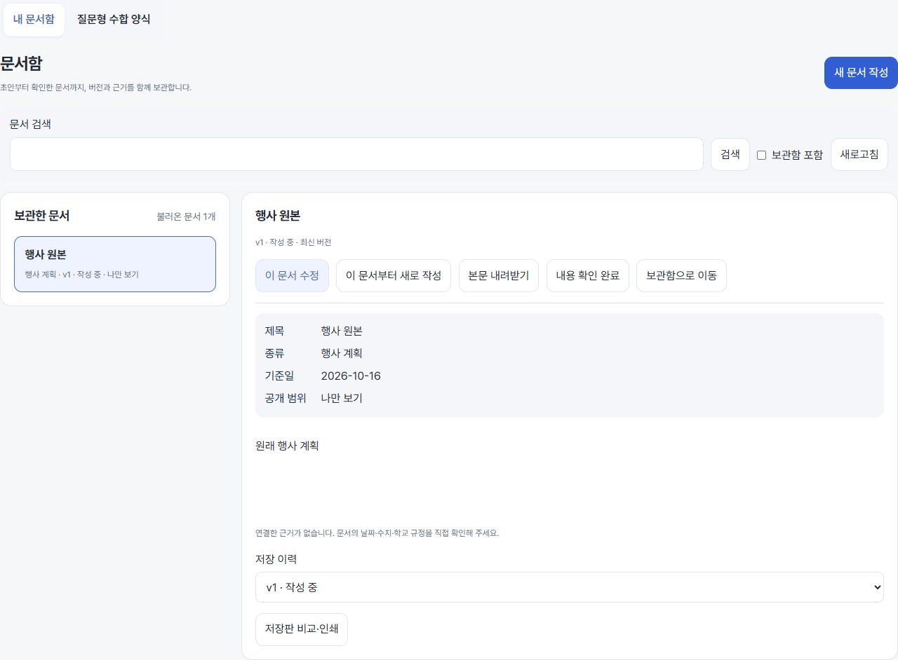
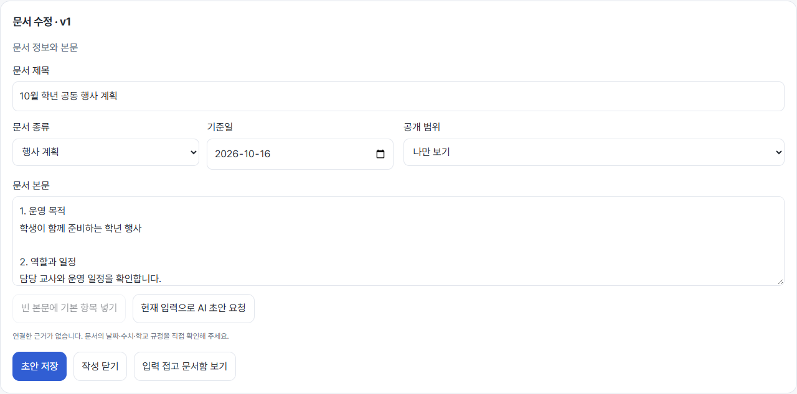
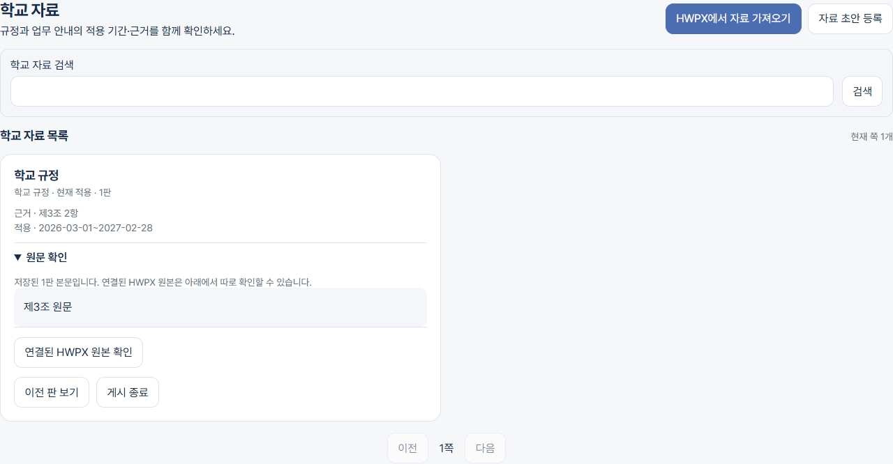
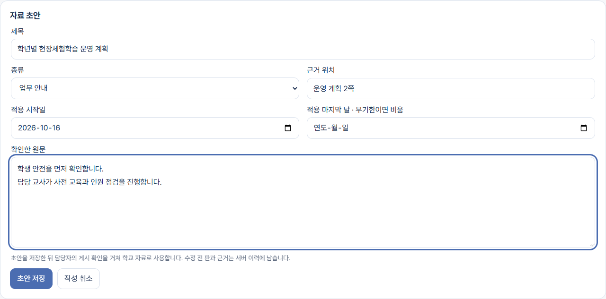
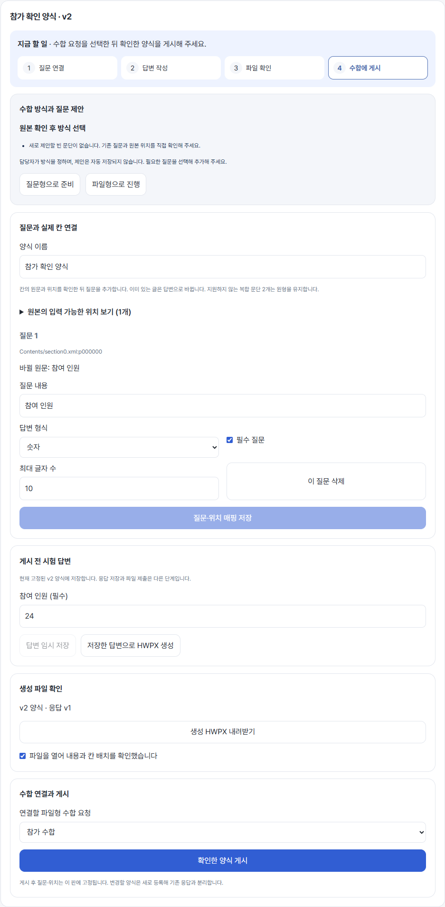

실제 React 화면 + 합성 자료로 확인한 화면입니다. 이미지를 누르면 원래 크기로 열립니다.
목록과 본문을 분리하고 주요 작업을 읽기 전에 찾을 수 있도록 모았습니다.

필수 정보는 짧게, 본문과 저장은 분명하게 배치했습니다.

게시 상태·적용 기간·근거와 원문을 함께 확인합니다.

기간과 근거를 묶고 본문에 집중할 수 있도록 정리했습니다.

지금 할 일과 단계 바로가기를 제공합니다. 파일 확인과 수합 연결·게시를 구분하며, 기존 확인 조건은 유지합니다.
